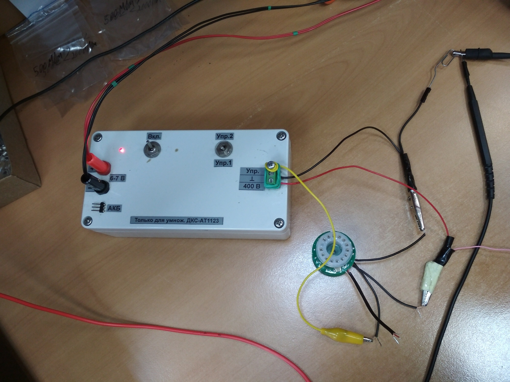
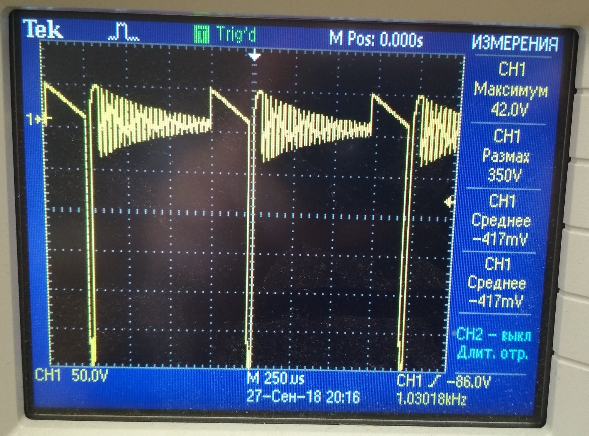
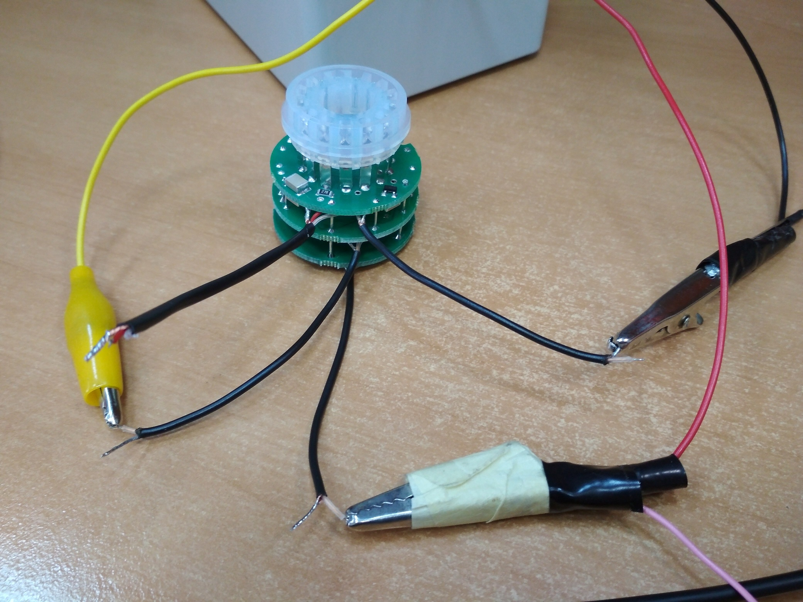
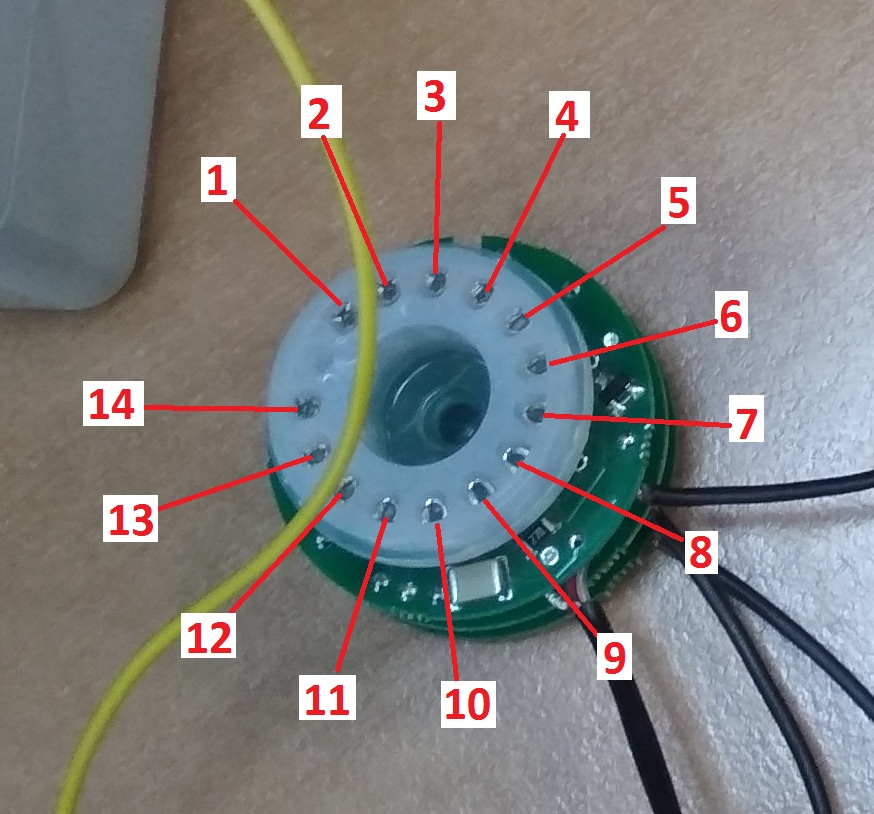

Проверка умножителя 1123
Собрать схему для проверки. Взять пульт для умножителей ДКС-АТ1123, подключить к источнику питания Б5-78/6 (подаем напряжение 5,9-6,0 В). К выводам пульта подключаем осциллограф и умножитель. 
Вид сигнала на осциллографе: 
Подключение умножителя к пульту: 
Далее статическим вольтметром С509 измеряем напряжение на каждом диноде. 
Показания напряжений на динодах умножителя 1123(допускается отличия в измерениях ± 20В, при сохранении закономерности):
| № диода | Мультиком | Статиком |
|---|---|---|
| 1 | 429 | 798 |
| 2 | 553/515 | 974/820 |
| 3 | 402 | 749 |
| 4 | 352 | 650 |
| 5 | 309 | 549 |
| 6 | 244 | 402 |
| 7 | 133 | 188 |
| 8 | 0 | 0 |
| 9 | 0 | 0 |
| 10 | 199 | 301 |
| 11 | 287 | 501 |
| 12 | 369 | 599 |
| 13 | 375 | 700 |
| 14 | 0 | 0 |
Uраскачка=365-373В
Если показания сильно отличаются или не происходит падения напряжения при переключении в другой режим, то проверяем правильно ли все запаяно и исправность всех элементов.